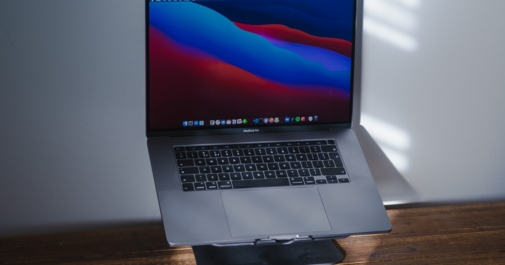

Laptop-Ständer im Vergleich: fest, höhenverstellbar oder faltbar?

Foto: Unsplash
Ein Laptop-Ständer ist eine der günstigsten Verbesserungen für die Ergonomie im Home-Office – aber die Auswahl reicht vom simplen Aluminium-Block bis zum höhenverstellbaren Gelenkarm. Diese Kaufberatung vergleicht die drei gängigen Bauarten und zeigt, wann sich welche lohnt.
Die drei Bauarten im Überblick
| Bauart | Typische Ausstattung | Für wen | Preis |
|---|---|---|---|
| Fester Aluminium-Ständer | Feste oder leicht verstellbare Standardhöhe, stabiler Aluminiumkorpus | Fester Arbeitsplatz, ein Laptop-Modell dauerhaft im Einsatz | ca. 20–40 € |
| Höhenverstellbarer Ständer Empfehlung | Stufenlose oder mehrstufige Höhenverstellung, oft klappbar | Regelmäßiges Home-Office, unterschiedliche Sitz-/Stehpositionen | ca. 30–60 € |
| Faltbarer Reise-Ständer | Leichtes Material, klein zusammenfaltbar, oft ohne Höhenverstellung | Unterwegs, Café, wechselnde Arbeitsorte | ca. 20–45 € |
Fester Aluminium-Ständer
ca. 20–40 €Für einen festen Arbeitsplatz, an dem immer derselbe Laptop steht, ist ein einfacher Aluminium-Ständer oft die pragmatischste Lösung: stabil, langlebig, kein Aufbau nötig. Die Höhe ist meist fix oder nur in wenigen Stufen verstellbar – wer unterschiedliche Sitzhöhen oder mehrere Nutzer am selben Platz hat, stößt hier an Grenzen.
Stärken
- Sehr stabil, guter Halt auch bei größeren Laptops
- Meist günstigster Einstieg in dieser Vergleichsgruppe
Schwächen
- Höhe kaum oder gar nicht individuell anpassbar
- Weniger flexibel bei wechselnden Arbeitsplätzen
* Affiliate-Link
Höhenverstellbarer Ständer
ca. 30–60 € Unsere EmpfehlungWer regelmäßig im Home-Office sitzt und die Bildschirmhöhe an Augenhöhe anpassen möchte, fährt mit einem höhenverstellbaren Ständer am flexibelsten: Er lässt sich auf unterschiedliche Sitzpositionen, Schreibtischhöhen oder sogar Stehphasen einstellen. Für den vollen Ergonomie-Effekt braucht es dazu eine externe Tastatur und Maus, sonst wandert nur der Bildschirm nach oben.
Stärken
- Individuell auf Augenhöhe einstellbar – oft stufenlos oder mehrstufig
- Flexibel bei wechselnden Sitzpositionen oder mehreren Nutzern
Schwächen
- Ohne externe Tastatur/Maus sitzen die Handgelenke ungünstig über der Tastatur
- Etwas teurer und sperriger als ein einfacher fester Ständer
* Affiliate-Link
Faltbarer Reise-Ständer
ca. 20–45 €Für alle, die viel unterwegs oder zwischen verschiedenen Arbeitsorten wechseln, ist ein leichter, faltbarer Ständer praktisch: Er passt in die Laptoptasche und ist schnell aufgebaut. Die Stabilität und Höhenverstellung fallen dafür meist bescheidener aus als bei festen oder höhenverstellbaren Modellen für den Dauereinsatz zuhause.
Stärken
- Klein zusammenfaltbar, leicht zu transportieren
- Schnell auf- und abgebaut für wechselnde Arbeitsorte
Schwächen
- Weniger stabil als feste oder höhenverstellbare Modelle
- Höhenverstellung meist eingeschränkt oder gar nicht vorhanden
* Affiliate-Link
Checkliste: Darauf kommt es beim Kauf an
- Höhenverstellung: stufenlos oder mehrstufig bringt den Bildschirm auf Augenhöhe
- Materialstärke: Aluminium oder stabiles Material hält Laptop und Gewicht sicher
- Kompatible Größe: Auflagebreite und Traglast zum eigenen Laptop passend prüfen
- Belüftung: offene Bauweise unterstützt die Kühlung des Laptops
- Externe Tastatur/Maus einplanen: sonst bringt die erhöhte Position wenig Ergonomie-Vorteil
Häufige Fragen
Brauche ich zusätzlich eine externe Tastatur, wenn ich einen Laptop-Ständer nutze?
Ja, wenn der Ständer den Bildschirm auf Augenhöhe bringt. Ohne externe Tastatur und Maus sitzt du dann mit angewinkelten Handgelenken über der erhöhten Tastatur – das ist auf Dauer unbequem. Ein Laptop-Ständer lohnt sich also meist im Set mit externer Tastatur und Maus.
Wie hoch sollte ein Laptop-Ständer den Bildschirm anheben?
Als grobe Orientierung: Die Bildschirmoberkante sollte etwa auf Augenhöhe liegen, damit der Nacken beim Blick geradeaus bleibt und nicht nach unten geneigt ist. Höhenverstellbare Modelle lassen sich individuell anpassen, feste Ständer haben meist eine fixe Standardhöhe.
Passt ein Laptop-Ständer zu jeder Bildschirmgröße?
Die meisten Ständer sind für gängige Laptop-Größen von etwa 11 bis 17 Zoll ausgelegt, oft mit verstellbarer Auflagebreite. Vor dem Kauf lohnt ein Blick in die Produktbeschreibung, ob die eigene Laptop-Größe und das Gewicht abgedeckt sind.
Fazit
Für die meisten Home-Office-Arbeitenden ist der höhenverstellbare Ständer die sinnvollste Wahl: Er passt sich an Sitzhöhe und Bildschirmposition an und lässt sich mit externer Tastatur und Maus zu einem vollwertigen ergonomischen Setup kombinieren. Der feste Aluminium-Ständer reicht, wenn Laptop und Sitzplatz dauerhaft gleich bleiben – der faltbare Reise-Ständer lohnt sich vor allem als Ergänzung für unterwegs.